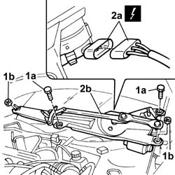

5050B42 Front windscreen wiper MOTOR - R.R.
- Path
- Procedures > 50 auxiliary units > 5050 screen washers and headlamp wash/wipe > 5050B WINDSCREEN WASH/WIPE > 5050B42 Front windscreen wiper MOTOR - R.R.
- Kind
- repair procedure (removal / refitting; the operation number is the code)
- Applies to
- all engines; all production periods
- Interactive page
- https://sloeber94.github.io/elrnDB-lThss/en/#/79295
Applies to: all engines; all production periods
 Removing
Removing
 Refitting
Refitting- Disconnect the negative battery terminal.
See in Op. 7040D50 ENGINE COMPARTMENT UPPER SOUND INSULATION SHIELD - R.R.
See in Op. 5050B34 WINDSCREEN WIPER ARM(S) for front windscreen wiper complete with blade
See in Op. 7055A18 Winsdcreen base TRIM - R.R.
1. Undo the fixing bolts (1a) and nuts (1b).
2. Disconnect the electrical connector (2a) and remove the windscreen wiper motor assembly (2b).
 | Description | Connector |
|---|---|---|
2a | Windscreen wiper control unit | M079 |

Applies to: all engines; all production periods
Refitting
Removing- Connect the electrical connector.
| Description | Connector |
|---|---|---|
. | Windscreen wiper control unit | M079 |
- Fit the windscreen wiper motor assembly in the housing.
- Tighten the fixing nuts and bolts to torque.
 | Value - daNm | Fastening | Component | Ø |
|---|---|---|---|---|
. | 2.4 | Nut | FRONT WIDSCREEN WIPER MOTOR | M8 |
| Value - daNm | Fastening | Component | Ø |
|---|---|---|---|---|
. | 2.4 | Bolt | FRONT WIDSCREEN WIPER MOTOR | M8 |
See in Op. 7055A18 Winsdcreen base TRIM - R.R.
See in Op. 5050B34 WINDSCREEN WIPER ARM(S) for front windscreen wiper complete with blade
See in Op. 7040D50 ENGINE COMPARTMENT UPPER SOUND INSULATION SHIELD - R.R.
- Connect the negative battery terminal.
Topics linked from this page (3)
- 5050B34 WINDSCREEN WIPER ARM(S) for front windscreen wiper complete with blade
- 7040D50 ENGINE COMPARTMENT UPPER SOUND INSULATION SHIELD - R.R.
- 7055A18 Winsdcreen base TRIM - R.R.